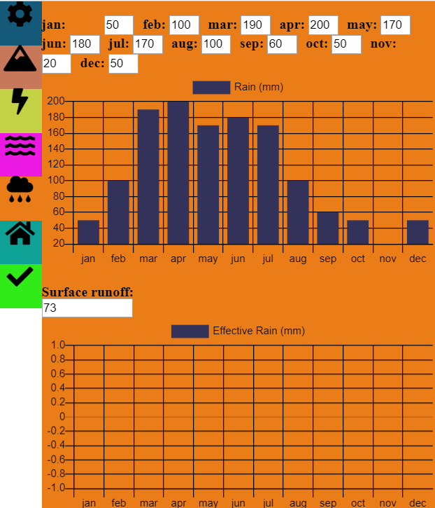

City Resources
City Resources is a project made for a Statistics and Probability class.

WARNING: This project do not show real data, and the relations and calculation can be wrong!
The City
This project generates a random city with 3 types of buildings,
each building has its own random number and type of household goods and each household item have a predefined
consume of energy and/or water wich is used to calculate the total of energy and water consumed in a day. Example:
The code generated a house type 1:
- House 1:
- N° of Residents: 3
- Household items:
- Shower
- energy: In a 15 min shower it uses N (kW/h) * N of residents * Frequency
- water: In a 15 min shower it uses N (L) * N of residents * Frequency
- Dish washer:
- energy: N (kW/h) per cycle
- water: N (L) per cycle
- Shower
- ...
After a house is generated, the code also randomizes a usage of each household item, for example, if there is 3 residents,
they will use the shower at least 3 times a day (1 shower per person), but they can use it more times,
with that we can simulate how much energy and water this house will consume in a day, month, or year. After generating the frequency of use for each house,
we simulate a year and sum the data from all the houses and display it in a chart.
There are three types if buildings, a 1 floor house, a 2 floor house and a 5 floor building(Wich has 4 apartments per floor + the entrance, in total 16 apartments)
The Resources
The resources are produced and consumed by the city
The water is produced by demand and the energy is generated by the flow of a river.
Water
The water comes from two sources, a river and the rain. The river has a flow rate, default 30 m3/s,
that is affected by the rain regime,if is raining a lot, the flow rise accordingly to surface runoff of the drainage basin (Yeah, the river is the main river of a basin, where all the rain drains)
The menu where you edit the river and see it's mean flow rate per month (base flow + rain).

Chart 1 - Basin Configs
The runoff calculations
For calculating how rain affect the flow rate of a river we need to calculate how much water ends in the river,
so the method used is the Soil Conservation Service (SCS) (Triangular Unit Hydrogram) .
"The Soil Conservation Service proposed the development of a synthetic unit hydrograph from
an admission, requiring only the determination of the peak flow and the time in which it
occurs".[1]
Concentration time (tc)
"It is the time interval counted from the beginning of the precipitation so that the whole basin
shall contribute to the study section."[1]
`tc = 57*(L^3/H)^0.385 (h)`
Where,
L = The lenght of the river (`Km`)
and
H = The area of the drainage basin (`Km^2)`
Rain duration (tr)
`tr = 1/5*tc (h)`
Peak time (tp)
`tp = 0,5*tr + 0,6*tc (h)`
Base time (tb)
`tb = 2,67 * tp (h)`
Peak flow rate (fp)
`fp = (2*Pe*H)/(tb) (m^3/s)`
Where,
Pe = Effective Precipitation (`mm`)
and
H = The area of the drainage basin (`Km^2`)
Effective Precipitation (Pe)
`Pe = (((P - 5080 )/ (N + 50,8))^2)/((P + 20320) / (N - 203,2)) (mm)`
Where,
P = Precipitation
and
N = runoff number
The runoff number
| Land Usage | Surface conditions | A* | B* | C* | D* |
|---|---|---|---|---|---|
| Cultivated land | With straight sets In straight rows |
77 70 |
86 80 |
91 87 |
94 90 |
| Regular plantation | In contour lines Terrace level In straight rows |
67 64 64 |
77 73 76 |
83 79 84 |
87 82 88 |
| Cereal plantation | In contour lines Terrace level In straight rows |
62 60 62 |
74 71 75 |
82 79 83 |
85 82 87 |
| Planting of leguminous plants or cultivated fields | In contour lines Terrace level Poor Normal Good |
60 57 68 49 39 |
72 70 79 69 61 |
81 78 86 79 74 |
84 89 89 94 80 |
| Pastures | Poor, in contour lines Normal, in contour lines Good, in contour lines |
47 25 6 |
67 59 35 |
81 75 70 |
88 83 79 |
| Permanent fields | Normal Sparse, low perspiration Normal Dense, high perspiration |
30 45 36 25 |
30 45 36 25 |
30 45 36 25 |
30 45 36 25 |
| Farms and earth roads | Normal Bad Hard surface |
59 72 74 |
74 82 84 |
82 87 90 |
86 89 92 |
| Forests | Very sparse, low perspiration Sparse Dense, high perspiration Normal |
56 46 26 36 |
75 68 52 60 |
86 78 62 70 |
91 84 69 76 |
| Waterproof surfaces | Urban Areas | 100 | 100 | 100 | 100 |
Table 8.1 from [1].
The menu where you edit the rain regime and see the effective rain based on the runoff number.
Chart 2 - Rain Configs
Consumable Water
The consumable water is produced in a water treatment plant, the water is directly harvested from the river and then
treated. There are two equations, for water harvesting and for water distribution. But before we
need define two constants k1, k2, and calculate the mean flow.[2]
`k1 = "Mean flow from the day of highest consume" / "Annual daily mean flow"`
`k2 = "Highest flow in the day" / "Mean flow from the day"`
Mean flow (Qm)
`Qm = (P * q)/86400 (L/s)`
Where,
P = Population of the supplied area
and
q = Mean daily consume (`L/(hab*d)`)
Water harvesting (Qprod)
`"Qprod" = ((Qm * k1 * 24)/t)*(1+((Qwtp)/100)) (L/s)`
Where,
t = Production run time (h)
and
Qwtp = water consumed by the water treatment plant (%)
Water distribution (Qdist)
`"Qdist" = Qm * k1 * k2 (L/s)`
The menu where you edit the water production.
Chart 3 - Water Configs
Energy
To produce energy, the hydroelectric power plant uses a percentage of the flow from the river so the simulation becomes more "didactic". The formulas used come from [3].
Installed capacity (P)
`P = (ns * V * D)/100 (kW)`
Where,
ns = Is the efficiency,
V = Flow in the turbines `(L/s)`,
D = Height of the water fall (m)
Effective energy produced (Ep)
`Ep = 730 * P * Cf (kWh)`
Where,
Cf = "It is the capacity factor, corresponding to the percentage of equivalent time at
which the plant would be generating full capacity."[3]
Chart 4 - Energy Configs
How everything is related
The objective of the project was to get an ideia on how resources can be related and how we can use simulations to manage ourselves in a better way.
In the next chart is shown the monthly balance of energy produced and consumed,
and how much water was taken from the river. Based on that we can predict droughts and blackouts in the city.
Chart 5 - Final report
A huge thanks to the creators of the lib that were used:
Three.js - https://threejs.org/
Chart.js - https://www.chartjs.org/
MathJax - https://www.mathjax.org/
References
[3].http://hidro.gd/calculando-a-energia-gerada/
more References
www.pha.poli.usp.br/LeArq.aspx?id_arq=7813
https://www.slideshare.net/YaraNeves3/6-modelos-chuva-vazo-rubertoparte1
https://capacitacao.ead.unesp.br/dspace/bitstream/ana/66/2/Unidade_1.pdf
https://www.usbr.gov/power/edu/pamphlet.pdf
https://www.guiadaengenharia.com/dimensionamento-de-uma-eta/